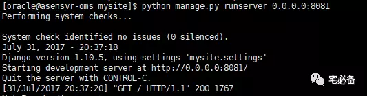

使用Django创建网站
从今天开始讲解如何利用Django框架搭建监控系统
再次推荐可先行网上了解下，另外我力求把每期分割的很细+
开发环境
操作系统:CentOS 7.3
Python版本 :2.7
Django版本: 1.10.5
操作系统用户:oracle
安装Django
这里我们使用pip安装
这样安装的是最新版本1.11.3
pip install Django
验证安装
>>> import django
>>> print(django.get_version())
1.11
由于我较早时间写的网站，版本为1.10.5，不影响实际使用，大家可安装最新版本
创建oracle用户
这里我们使用oracle用户来创建和维护我们的监控系统,该用户请事先创建
[root@asensvr-oms ~]# useadd oracle
[root@asensvr-oms ~]# passwd oracle
建立project
Django建立网站需要首先创建一个project，然后建立一个app(即网站)

这里我们使用oracle家目录存放使用到的文件
[oracle@asensvr-oms ~]$ cd ~
[oracle@asensvr-oms ~]$ django-admin startproject mysite
创建完project后目录结构如下
mysite/
manage.py
mysite/
__init__.py
settings.py
urls.py
wsgi.py
- manage.py是一个命令行工具用户和django进行交互，后续创建app，同步数据库等会用到
- mysite/init.py 是一个空白文件，现阶段我们无需理会，保留即可
- mysite/settings.py:是django的配置文件，非常重要，后面会专门介绍
- mysite/urls.py:为url文件
- mysite/wsgi.py 在我们部署web服务器的时候用到
创建app
进入 manage.py的目录执行
cd ~/mysite
python manage.py startapp monitor
创建完app后会在mysite目录新建个monitor目录，结构如下
monitor/
__init__.py
admin.py
apps.py
migrations/
__init__.py
models.py
tests.py
views.py
urls.py (现在没有，后续添加的)
- admin.py里面保存的是需要后台管理的表，后面会有介绍
- apps.py保存app的相关信息，暂时用不到
- models.py里面保存的是关系型数据库表的定义
- tests.py里面写测试程序，目前我没用到过
- views.py定义的是后端处理程序，后面会介绍
- urls.py:为url文件
- migrations文件夹为同步数据表专用文件夹，非常重要，后面会说
配置文件设定
我们需要编辑 ~/mysite/mysite/settings.py文件
设定允许访问的主机
如有其他主机需要访问，需一个个添加
ALLOWED_HOSTS = ['10.65.202.218','10.65.5.189']
添加monitor app应用
INSTALLED_APPS = [
'django.contrib.admin',
'django.contrib.auth',
'django.contrib.contenttypes',
'django.contrib.sessions',
'django.contrib.messages',
'django.contrib.staticfiles',
'monitor',
]
配置连接MySQL数据库
删除原有的sqlite数据库连接
DATABASES = {
'default': {
'ENGINE': 'django.db.backends.mysql',
'NAME': 'oracle',
'USER': 'username',
'PASSWORD': 'password',
'HOST': 'localhost',
'PORT': '',
'OPTIONS': {
'read_default_file': '/etc/my.cnf',
},
}
}
更改时区
TIME_ZONE = 'Asia/Shanghai'
设置静态文件位置
这里放置静态文件，如图片,css文件等
目录需提前建立
STATIC_ROOT='/home/mysite/mysite/monitor/static/'
同步数据
通过上面的配置接下来我们同步数据，让django的一些数据放到我们的MySQL数据库中
python manage.py migrate
创建admin超级用户
该用户为后台管理的用户
python manage.py createsuperuser
可以看到密码有复杂度需求
开启开发环境
这时我们可以使用django自带的web服务器来运行
该窗口不可关闭，正式环境部署后续说明
注意如果是非root用户无法使用80端口
cd ~/mysite
python manage.py runserver 0.0.0.0:8081

之后进入网站
http://10.65.202.218:8081/
当看到下图时就说明已经配置并启动成功
如果有错，请根据提示解决，也可留言或在后台询问
打开admin后台
我们日常管理MySQL表需要进入admin页面管理
http://10.65.202.218:8081/admin
使用上面使用 createsuperuser 命令创建的用户名密码登陆
进入之后可使用该图形化管理数据库表

后续在model.py文件里定义的表会在这里显示
今天介绍了介绍了如何安装配置并创建网站，内容有点多，大家可按照步骤一步步来，我也是重新搭的环境一步步来的
源码地址
源码请查看我的GitHub主页
https://github.com/bsbforever/wechat_monitor
下期将介绍如何利用Django创建MySQL数据库表